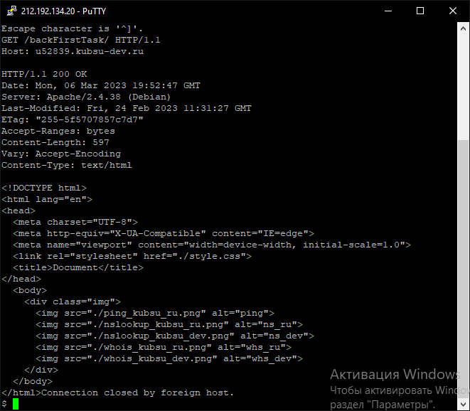
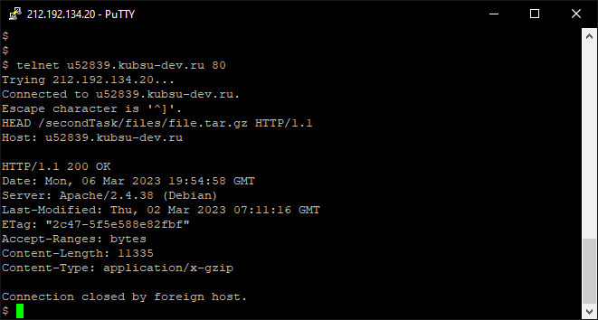
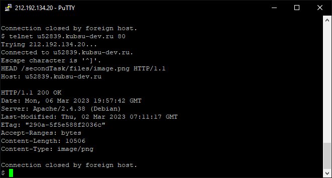
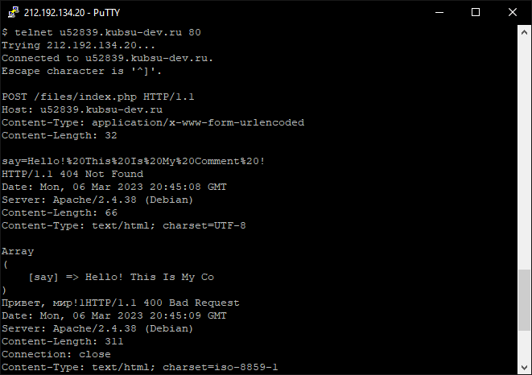
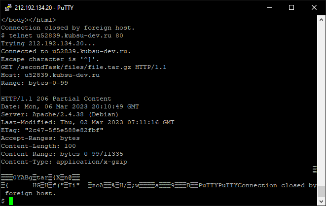
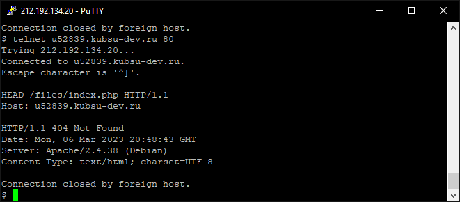

получить главную страницу методом GET в протоколе HTTP 1.0

получить внутреннюю страницу методом GET в протоколе HTTP 1.1

определить размер файла file.tar.gz, не скачивая его

определить медиатип ресурса /image.png

отправить комментарий на сервер по адресу /index.php

получить первые 100 байт файла /file.tar.gz

определить кодировку ресурса /index.php
